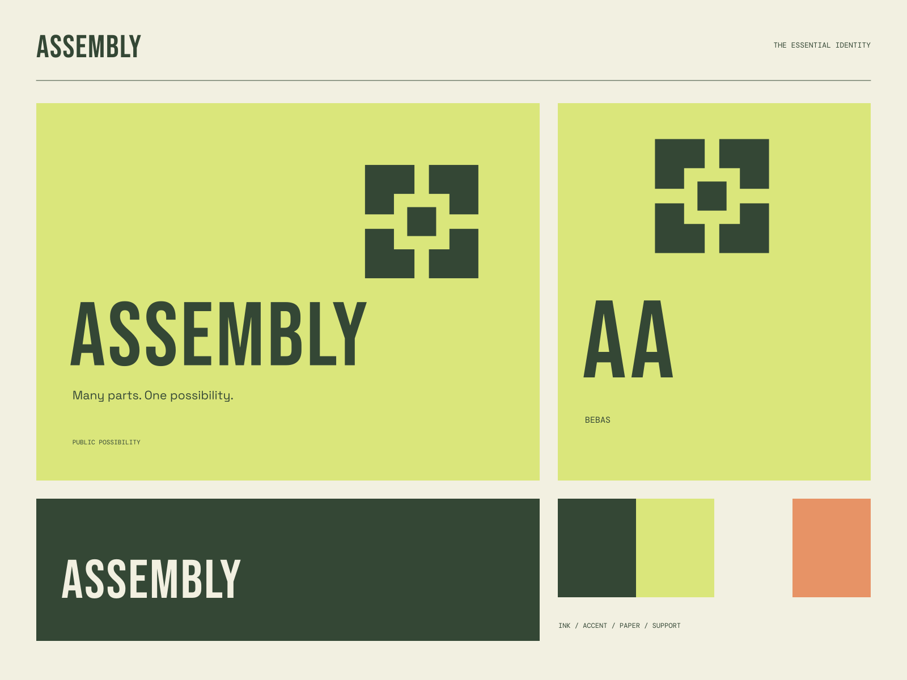

01
A part for everyone
A public practice with room for many kinds of contribution.
PUBLIC ARTS / COLLECTIVE POSSIBILITY
Many parts. One possibility. Different parts. A shared possibility.
A coherent little world
Different parts. A shared possibility. Many parts. One possibility.
01
A public practice with room for many kinds of contribution.
02
Useful graphic expression that brings people toward a shared goal.
03
A collective that values participation as much as the finished work.

The point of view
Fitted graphic modules, large civic type, constructive street-poster layouts, and a high-visibility citron palette. Many voices combine into one deliberately public system.